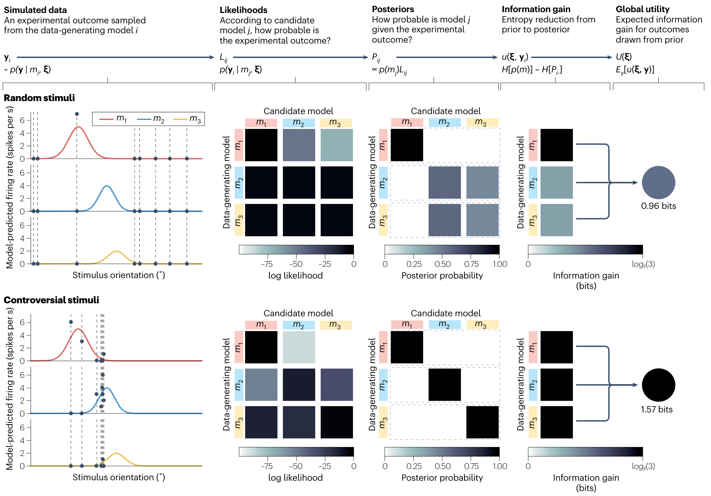
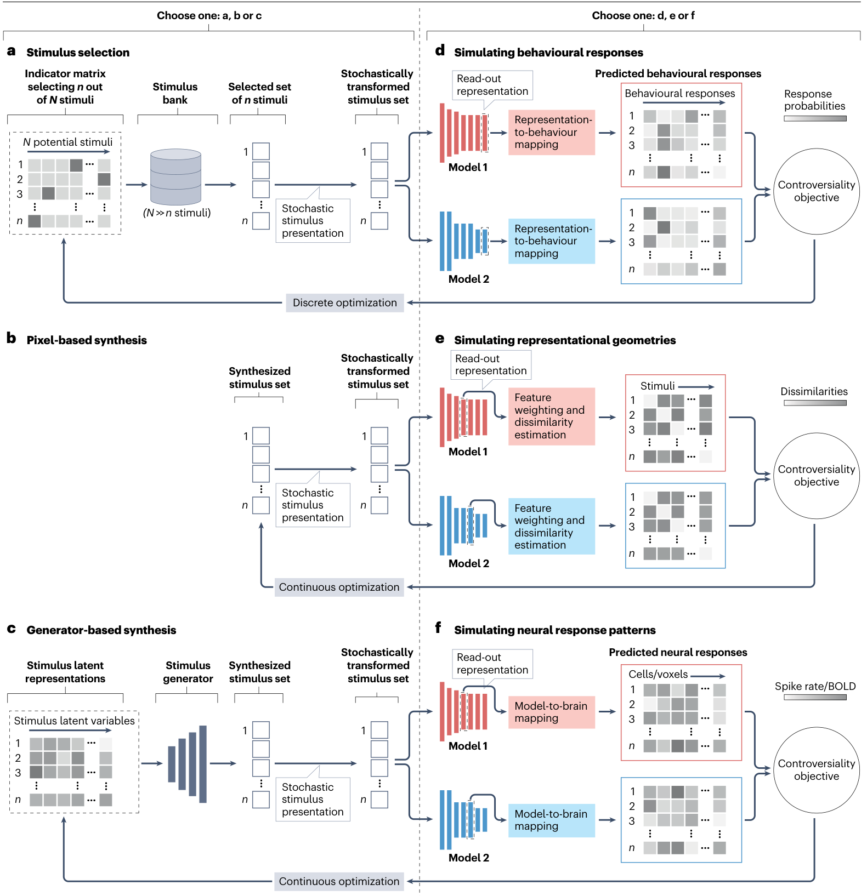
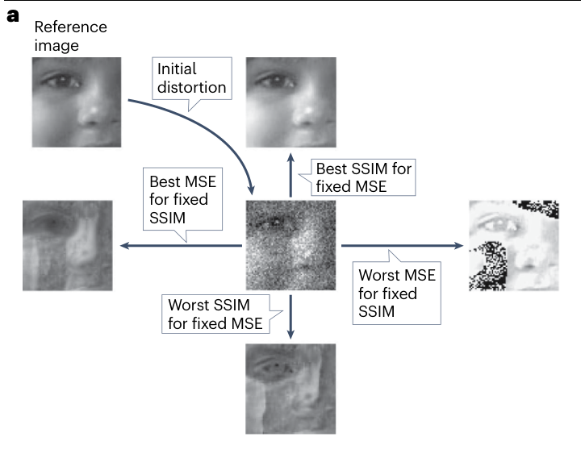
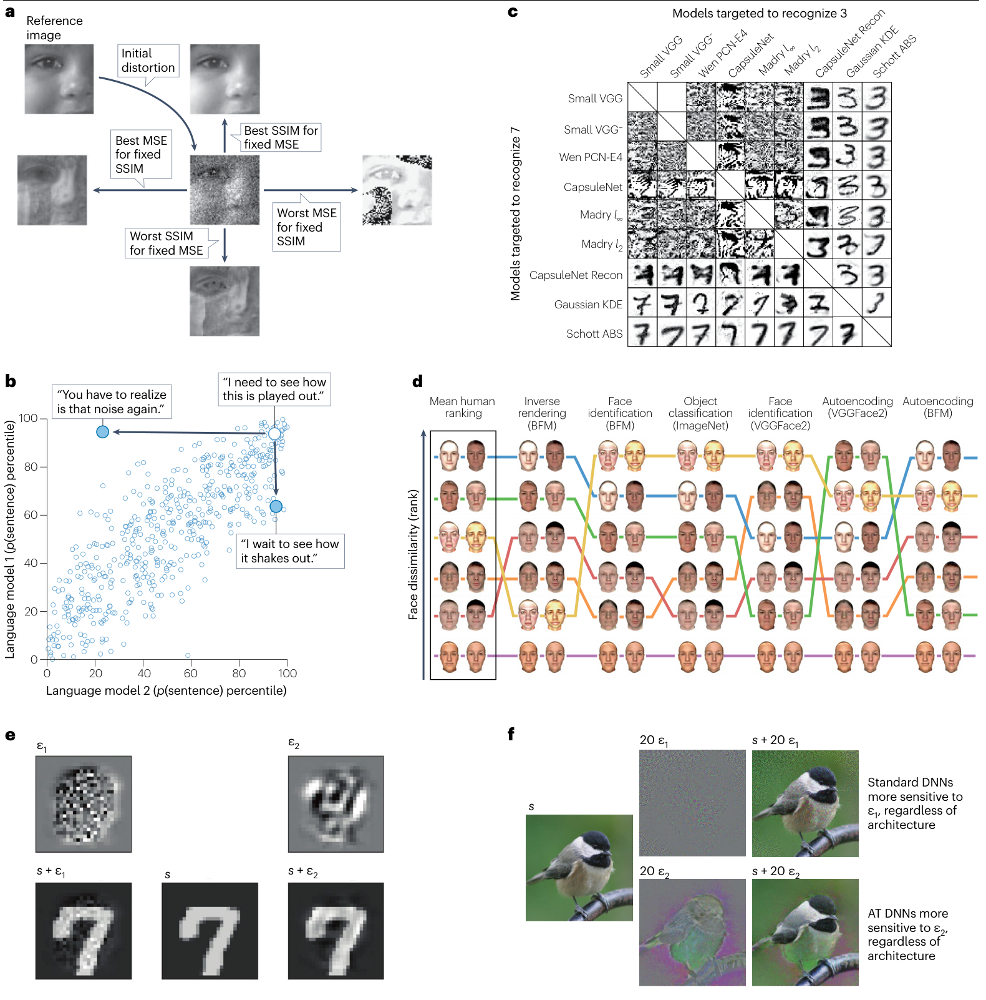
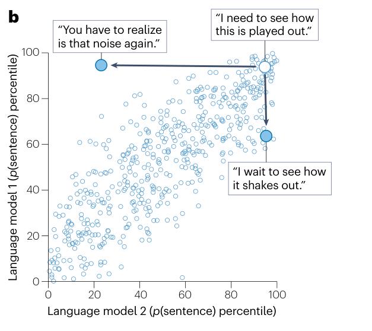
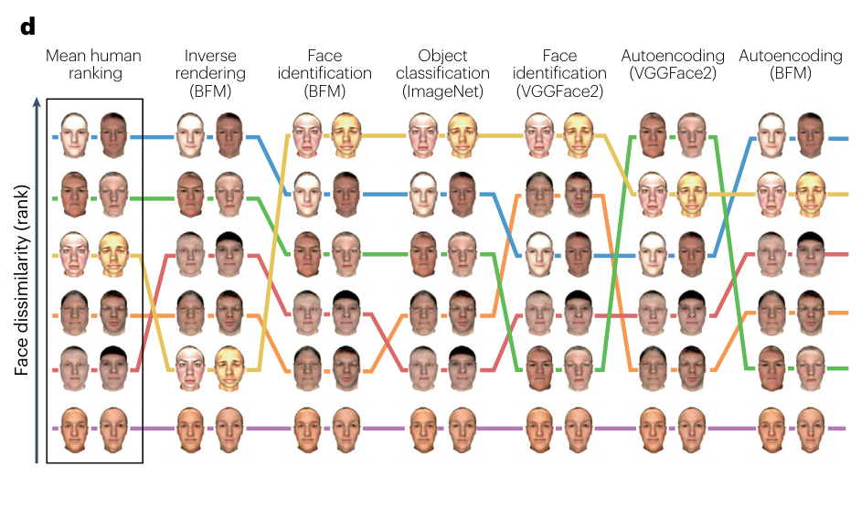
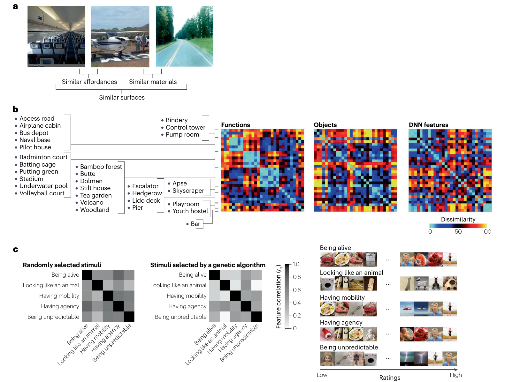

心理学 × 计算建模
让模型产生分歧
理解大脑如何计算
当两种解释都说得通，什么样的实验能让我们看出它们的区别？
两种解释都正确时，还能学到什么？
看到一只猫，我们通常很快就能认出它。但“认出来了”并不直接告诉我们：大脑依赖的是轮廓、毛发纹理，还是这些线索的某种组合。
从一个熟悉的心理学难题开始
设想两位研究者解释人如何识别物体。第一位认为，轮廓形状最关键；第二位认为，表面纹理最关键。在常见照片里，猫的轮廓往往与猫的毛发一起出现，因此两种解释可能预测同一个答案。再增加一批相似照片，未必能解决分歧。
如果把一种形状与另一种纹理组合起来，两个解释就可能分道扬镳。这时，人的判断才能告诉我们：在这个条件下，哪种解释更接近行为。心理学中“让线索发生冲突”的思路，在这里被推广为一个计算问题：主动寻找能区分模型的实验条件。
本文是一篇方法综述。作者讨论如何选择或生成“争议刺激”（controversial stimuli），使候选模型对同一项可测量结果给出不同预测。这里的“争议”指模型之间的分歧，不是刺激具有社会争议。
它也不同于通常的对抗样本：对抗样本旨在让某个模型犯错；争议刺激旨在让不同模型对同一个可观察结果给出不同预测。后者的重点是区分解释，而不只是制造错误。
原文 · PDF 第 2 页 ↗把问题变成一条可走通的研究路径
- 竞争解释模型到底在哪一点不同？
明确要比较的是形状与纹理、训练任务，还是其他计算假设。
- 可测量预测差异会怎样反映在数据里？
把模型输出转成选择概率、神经反应或表征距离。
- 实验设计哪种刺激最能区分它们？
同时考虑预测差异、测量噪声与可调整参数。
- 收集证据结果支持谁，支持到什么程度？
更新证据，检查失败情形，再设计下一轮实验。
下面用一个简化的类别判断任务贯穿计算。它是为理解公式而构造的教学模型，不是论文中的真实神经网络，也不声称完整解释人的物体识别。
要比较解释，首先得把“形状重要”这样的语言，变成能对同一个结果作出预测的模型。
把心理学解释写成预测
我们让两个模型观看同一个抽象物体，并预测观察者会把它叫作“甲类”还是“乙类”。两者唯一的区别，是各自读取哪一种线索。
先认识刺激、反应和模型
| 符号 | 含义 | 本例中的约定 |
|---|---|---|
| s | 形状线索 | −1 到 +1；越接近 +1，形状越支持甲类。图中用由方到圆表示。 |
| t | 纹理线索 | −1 到 +1；越接近 +1，纹理越支持甲类。图中用条纹到圆点表示。 |
| ξ = (s,t) | 实验设计／这里的一幅刺激 | 研究者可以选择它；一般也可包含一组刺激、试次数等。 |
| y | 观察到的反应 | y = 1 表示选择甲；y = 0 表示选择乙。 |
| Mₛ、Mₜ | 两个候选模型 | 分别只依赖形状、只依赖纹理。 |
| qₛ、qₜ | 模型预测的甲类概率 | 是反应概率，不是模型正确的概率。 |
| ε | 随机作答比例 | 以 ε 的概率完全随机地选甲或乙；范围 0 到 1。 |
这些线索数值是我们预先规定的编码。“圆”与“甲”没有天然对应关系。真实研究需要定义可测量的刺激特征，或让训练后的模型自行提取特征。
线索怎样变成选择概率？
先用一个平滑函数把线索强度转成概率。令 x 代表模型读取的那条线索，k 控制曲线有多陡；本例固定 k = ln 9 ≈ 2.197。
当 x = +1，e−ln 9 = 1/9，因此 g(+1) = 1/(1+1/9) = 0.9。同理，g(−1) = 0.1，g(0) = 0.5。线索越支持甲类，甲类概率越高，但一次反应仍可能选乙。
再加入随机作答。以 1−ε 的概率按线索判断，以 ε 的概率抛一枚公平硬币，于是：
qₜ = (1−ε) g(t) + ε × 0.5
ε 作用在“线索已转换成概率”之后，把预测拉向 0.5。它不是“错误率”：例如 g(s)=0.9、ε=0.2 时，qₛ=0.8×0.9+0.2×0.5=0.82。随机作答有一半仍会选择甲。
让两种线索一致，再让它们冲突
先点击三个情形，比较概率条；再拖动 ε，看分歧在哪一步被削弱。图形仅显示我们规定的抽象线索。
模型不确定，与模型互相反对，是两回事
如果两个模型都预测 q=0.5，无论观察者选甲还是乙，两者都同样能解释这个结果。刺激可能很难判断，却没有帮助我们区分模型。
如果一个预测 qₛ=0.9，另一个预测 qₜ=0.1，那么“选甲”在前者下更常见，“选乙”在后者下更常见。同样是尚未知道结果，此时的观察有机会改变我们对模型的判断。
因此，需要比较的是同一可观察结果的预测分布。两个网络的内部向量看起来差异很大，并不保证经过读出后，会预测不同的行为或神经数据。
原文 · PDF 第 5 页 ↗预测有了，下一步就可以问：如果真的观察到一次选择，这份证据应怎样改变我们对模型的看法？
一次观察怎样改变模型证据
仍使用形状支持甲、纹理支持乙的冲突刺激。两个模型预测甲的概率分别是 0.9 和 0.1。现在，我们真的看到观察者选了甲。
从一组频数理解贝叶斯更新
先给两个模型相同的先验权重：π=P(Mₛ)=0.5，P(Mₜ)=0.5。先验表示观察这次结果之前的模型权重，不是模型预测的选择概率。
可以想象 1,000 次虚拟世界：其中 500 次由形状模型产生数据，500 次由纹理模型产生数据。形状世界约有 450 次选甲，纹理世界约有 50 次选甲。只看“选甲”的世界，约 450/(450+50)=0.9 来自形状模型。
= 0.5×0.9 / (0.5×0.9 + 0.5×0.1) = 0.9
竖线“|”读作“在已知……的条件下”。分子是“形状模型且选甲”的联合概率；分母加上所有候选模型产生“选甲”的概率，用来归一化。若观察到乙，把 q 换成 1−q，形状模型的后验就变成 0.1。
把某个模型当作已知时，结果 y 出现的概率叫作似然。这里选甲的似然比是 0.9/0.1=9：这次结果把先验赔率乘了 9。后验 0.9 依赖两个候选模型、给定先验和反应规则，不能直接读作“大脑有 90% 的概率只看形状”。
Box 1，贝叶斯公式 · PDF 第 8 页 ↗亲自选择下一次呈现什么
一个可重复的小实验
程序先随机选定一个隐藏模型，之后始终由它产生反应。你可以自由选择刺激，观察证据如何积累；这不是对你的认知能力的测验。
每一轮把上一轮的后验作为新的先验。相同模型下，各次反应在给定刺激后相互独立；即便隐藏模型不变，也可能偶尔产生支持另一个模型的反应。揭示模型只是让我们核对这个模拟世界，真实实验没有这个按钮。
普通刺激并非没有价值：它们可用于检查基本表现、估计参数和检验生态相关性。这里只是在两个已知模型的相同预测处，新增反应不能区分它们。
刚才我们是在结果出现后衡量证据。设计实验时结果尚未出现，需要提前比较各种可能结果的平均价值。
在结果出现前，选择更有信息的实验
好的实验不一定让某个模型获胜；它应让我们无论看到哪一种结果，都更有机会弄清模型之间的区别。信息增益把这个想法写成可计算的量。
用熵表示尚未解决的不确定性
仍用 π 表示形状模型的权重。对于两个模型，熵 H 用下面的函数计算，log₂ 表示以 2 为底的对数，单位是 bit（比特）：
当 π=0.5，两个模型同样可能，h(0.5)=1 bit。当 π=0.9，h(0.9)≈0.469 bit；当 π=0 或 1，熵为 0，约定 0 log₂0=0。熵表示在当前概率分配下还剩多少不确定性，不保证我们确信的模型就是真的。
一次观察的信息增益可写成“观察前的熵−观察后的熵”。但我们还不知道会看到甲还是乙，因此必须先求两种结果的概率。
把两个可能结果都算进去
令 a=qₛ、b=qₜ，缩短公式。先按模型权重混合两种预测，再分别做贝叶斯更新：
π甲 = πa / P(甲 | ξ)
π乙 = π(1−a) / P(乙 | ξ)
π甲、π乙表示看到相应结果后的形状模型权重。用结果出现的概率对后验熵加权，就得到预期剩余不确定性：
EIG 是 expected information gain，即预期信息增益。默认例子里两种结果各有 0.5 的概率；两种后验分别是 0.9 和 0.1，熵都约为 0.469。于是 EIG=1−(0.5×0.469+0.5×0.469)=0.531 bit。我们并没有预先挑选有利于某个模型的结果。
让计算过程随参数一起变化
先比较一致与冲突刺激，再改变先验或随机作答比例。表格列出每一种结果，而不是只展示有利的那一行。
在正确使用给定预测分布计算时，EIG 不小于 0，也不超过先验熵。某个单独结果却可能让熵上升：例如原本 π=0.9，冲突刺激得到乙，后验变成 0.5，此次熵差为 0.469−1=−0.531 bit。这并不矛盾，平均值与单次结果是不同的量。
Box 1，原文公式 1–6 · PDF 第 8 页 ↗预测差异、信息增益与模型恢复率
在上述对称小例子中，拉大两个反应概率的差异很有效。但预测差异并不总是等价于信息增益：先验、结果的概率分布、噪声，以及哪些参数还能调整，都会影响实验价值。
| 设计指标 | 具体在问什么 | 使用时需要什么 |
|---|---|---|
| 预测差异 | 两个模型预测相差多远？ | 明确差异的尺度，并检查噪声与参数调整是否会淹没差异。 |
| 预期信息增益 | 平均能减少多少模型不确定性？ | 模型先验、预测分布，以及必要的参数积分。 |
| 预期模型恢复率 | 若由某个已知模型生成数据，分析程序多常认对它？ | 模拟数据、明确的拟合与选模规则，再统计成功比例。 |
原文图 2 用三个模拟方向调谐神经元模型演示优化：选取 8 个方向时，图示随机设计与优化设计的信息增益分别为 0.96 和 1.57 bit，模型恢复率分别为 73.80% 和 99.83%。这是论文中的模拟说明，既不是人类实验结果，也不是所有实验都能获得的提升幅度。
图 2 · PDF 第 9 页 ↗ Box 2 · PDF 第 10 页 ↗原文图 2｜从模拟数据走到预期信息增益
把上一节的两模型、两结果计算，推广到三个有噪声的神经元模型。先比较上下两排，再横向读计算流程。

Golan、Schütt & Kriegeskorte, 2026 · 原文 Figure 2 · 原图与所引子图署名见英文图注 · 原文位置 ↗ · 放大原图 ↗
为什么把刺激方向换一换，就可能得到更多信息？设想三个模型在某些方向上都预测几乎没有发放。如果我们主要呈现这些方向，观察到低反应时，三个模型都会说“这正是我预期的”。即使测量完全正确，也很难判断哪个解释更好。只有在它们预测明显分开的方向上，一次反应才更可能支持其中一个、削弱另外两个。
图中优化后的刺激向这些有区分力的方向集中。变化不仅发生在最左侧的刺激位置，也会一路传到后面的推断：在所示模拟中，后验更集中于生成数据的模型，观察后的不确定性因而更低。最右侧的信息增益，就是把许多可能数据带来的变化综合起来衡量，而不是只选择某次特别成功的结果。
这里还可以把数字与前面的计算连起来。两个等先验模型最多有 1 bit 的不确定性；三个等先验模型则有 log₂3≈1.585 bit。因此，原图的 1.57 bit 表示，在这些模拟假设下，优化设计平均消除了大部分模型不确定性。真正开展实验时，还需要检查预测和噪声假定是否贴近实际测量。
坐标、符号与子图对应关系
- 上排 Random stimuli 使用随机选取的刺激方向，下排 Controversial stimuli 使用优化方向。第一列横轴是方向角，纵轴是预测发放率；三条曲线代表三个候选模型，竖虚线标出选中的方向。
- 从第二列往右依次是似然、模型后验、单次信息增益、整体效用。似然与后验矩阵的行是生成数据的模型，列是被评估的候选模型；后验集中在对角线，表示数据更支持其真实生成者。
- 最右的 0.96 与 1.57 bit 是对生成模型和模拟数据取平均后的效用。三个等先验模型的最大信息量是 log₂3≈1.585 bit；因此 1.57 已接近这个上限。
查看原文英文图注与署名
Fig. 2 | Estimating and optimizing expected information gain using a Monte Carlo approach. In this simulation, we compare the predictions elicited by two sets of eight stimulus orientations. For each set, the predictions of three alternative toy models of an orientation-selective neuron (m1, m2 and m3) are depicted in different colours (red, blue and yellow). In the top panel, the orientations are randomly sampled, and in the bottom panel, the orientations are optimized such that empirically measured responses to these stimuli will enable us to adjudicate among the three data-generating models. Each toy model predicts Poisson- distributed spike counts with a mean firing rate parameterized by a scaled von Mises tuning curve over stimulus orientation (left column). The outcome of a single simulation for each data-generating model is plotted (black dots showing firing rates) for each stimulus set (ξ, dashed grey lines). For each simulation from a data- generating model, a log-likelihood value is estimated for each candidate model using the natural logarithm (second column). Applying Bayes’ rule yields posterior probabilities over candidate models for each of the three simulations (third column). The information gain the stimulus set achieves in a particular simulation is the reduction in entropy of the posterior relative to a prior belief over the three models (here, assigning equal prior probability to each model). This information gain serves as a local utility, specific to each simulated outcome (fourth column). Taking an expectation over the three data-generating models and over many simulated outcomes yields a global utility: the expected information gain afforded by the stimulus set (Box 1). Here, the utility was estimated by averaging across 3,000 simulations. The random stimulus set was drawn from a uniform distribution over the interval [0°, 180°). This set yields simulated spike counts that do not discriminate between m2 and m3. By contrast, maximizing the expected information gain by differential evolution yields a stimulus set concentrated at orientations where the three toy models disagree in their predicted firing rates. Model-recovery accuracy was near perfect for the controversial stimulus set (99.83%) but substantially lower for the randomly sampled stimulus set (73.80%). Similar estimation and optimization procedures can be applied to more elaborate stimulus parameterizations, enabling the selection or synthesis of complex stimuli to support adjudication among neural network models.
知道怎样给实验打分后，还要决定到哪里寻找刺激，以及哪些限制符合我们真正想回答的问题。
把实验设计变成一个搜索问题
在形状与纹理的例子中，我们可以直接想到冲突刺激。真实图像、语句和神经网络的空间更复杂，通常需要让计算机帮忙搜索。
先规定允许怎样改变刺激
| 搜索空间 | 可以怎样操作 | 需要留意的边界 |
|---|---|---|
| 已有刺激库 | 从照片、语句或声音中选择一部分。 | 保留已有材料的特点，但受库存范围限制。 |
| 直接优化输入 | 调整图像像素、词语或其他输入成分。 | 自由度大，也可能产生不自然或脆弱的刺激。 |
| 生成模型的潜在空间 | 调整生成器输入，再得到图像或其他刺激。 | 生成器带来结构约束，但优化后仍可能出现异常；不能保证自然。 |
离散材料可用贪心选择或交换搜索；可微的连续模型可用梯度；不能求导时可考虑演化等方法。这些方法通常只找到当前条件下较好的解，不能仅凭一次优化就宣称全局最优。
还要区分两种“先验”：模型先验 P(M) 表示候选解释的初始权重；刺激空间的先验或约束，表示哪些刺激更可能被考虑。它们回答不同问题。
原文 · PDF 第 12 页 ↗原文图 1｜选刺激空间，也要选测量结果
把左侧看成“怎样产生刺激”，右侧看成“预测什么数据”。先各选一种，再沿箭头组成一次实验设计。

Golan、Schütt & Kriegeskorte, 2026 · 原文 Figure 1 · 原图与所引子图署名见英文图注 · 原文位置 ↗ · 放大原图 ↗
从心理学问题出发，我们通常先想到某种想拆开的解释，例如形状与纹理。但计算机不能直接优化“解释是否清楚”，它需要知道哪些东西可以改变，以及改变之后要比较什么。这就是原图把实验设计分成左右两侧的原因。
左侧决定我们能提出什么问题。从已有照片中筛选，能保留熟悉材料，却可能找不到足够强的线索冲突；直接调整像素，能更自由地放大冲突，却可能得到陌生的图像；使用生成器，则把搜索限制在生成器能够表达的范围里。每一种选择都在改变可检验的刺激范围，而不只是改变生成图片的技术。
右侧决定什么才算模型之间有分歧。两个模型可能给出相同的类别答案，却认为不同刺激之间的相似关系不同；它们也可能预测不同的神经反应。因此，行为选择、相似性判断与神经记录会提出不同的比较问题。我们需要先把模型接到计划测量的结果上，再让分歧分数引导下一轮刺激搜索。
坐标、符号与子图对应关系
- 左侧 a 是从刺激库选择，b 是直接优化像素，c 是调整生成器的潜在变量。它们对应不同搜索空间，不是必须依次执行的三个阶段。
- 右侧 d 预测行为反应分布，e 预测表征距离，f 预测神经反应。红色与蓝色是两个模型；灰色方格表示各模型的预测，并非实测数据。
- 最右端 controversiality objective 给预测分歧打分，底部箭头把分数传回刺激搜索。中间 stochastic stimulus presentation 可加入抖动或噪声，检查分歧是否稳健。
查看原文英文图注与署名
Fig. 1 | Optimizing experiments for model discrimination. Experimental design requires choosing a type of stimulus search space (panels a–c) and a type of outcome to be measured (panels d–f) before the finer-grained decisions that enable an experimental stimulus set to be optimized. The choice of stimulus search space must balance model-comparison power and ecological validity (panels a–c). The stimuli may undergo stochastic transformations, such as the addition of noise, to simulate realistic perceptual conditions (for example, spatial jitter can simulate imprecise fixation and improve the robustness of model predictions for visual stimuli). Selecting stimuli from a stimulus bank via discrete optimization allows strong control because only stimuli included in the stimulus bank can appear in the experiment (panel a). Continuously optimizing visual stimuli in pixel space (or stimuli for other sensory modalities in an analogous low- level description) provides a highly flexible search space because, in principle, any displayable image can be reached, subject only to minimal restrictions such as image resolution and colour space (panel b). Generating a stimulus set by optimizing the latent variables of a specific stimulus generator (for example, a generative adversarial network87, a diffusion model93 or a differentiable renderer38) provides a compromise between control and flexibility: the search space is continuous but confined to a generator-defined manifold (panel c). For a candidate stimulus set, researchers read out each model’s intermediate representations or outputs and transform them into predictions of empirical outcomes, such as behavioural responses, representational dissimilarities or neural responses (panels d−f). The nature of the predicted outcomes determines what optimization objectives are appropriate. Each objective provides a different operationalization of controversiality, defining in what sense the outcomes predicted by different models are to diverge (see Boxes 1–3 for mathematical definitions). When behavioural responses are predicted, model outputs or layer representations are mapped to a predicted behavioural response distribution (for example, using a softmax for predicting categorical choices). Model discrimination experiments can be designed by finding stimulus sets that produce dissimilar predicted behavioural response distributions across the alternative models (panel d). When representational geometries are predicted, layer representations are summarized by representational dissimilarity matrices, optionally incorporating pre-fitted feature weighting. Model discrimination experiments can be designed by finding stimulus sets that yield dissimilar representational dissimilarity matrices (panel e). When neural responses are predicted using linear mappings from the model units, model discrimination experiments can be designed by finding stimulus sets that yield dissimilar predicted neural responses (panel f). Importantly, whether behavioural responses, representational geometries or neural responses are being predicted, researchers may need to account for measurement noise and uncertainty about the parameters of the model-to-brain or model-to-behaviour mapping. BOLD, blood-oxygen level-dependent responses.
允许线索冲突到什么程度？
把 s、t 各限制为 5 个值，就有 25 个候选刺激。为了演示约束，假定熟悉材料往往靠近 s=t；这只是教学假定，不是现实自然度的测量方法。
硬约束 |s−t|≤d 直接排除冲突过大的刺激。软惩罚则允许搜索所有满足硬约束的点，但扣除成本 C=(s−t)²/4。令 λ 是成本权重，单位设为 bit，优化目标为：
在有限刺激库里寻找最优点
横轴是形状，纵轴是纹理；灰格不允许选择。边框标出所有并列最优候选。这里只枚举这 25 个点，先验固定 0.5，ε 固定 0。
增大 λ，相当于更重视保持两条线索一致。此时“较少信息的设计”可能拥有更高的综合效用。因此，最优刺激永远是相对于目标、约束和候选模型而言的。这里的软惩罚是教学示例，不是论文给所有任务规定的自然度公式。
到目前为止，两个模型的参数都是已知的。真实模型往往还能重新拟合，这会改变“让它们产生分歧”的难度。
分歧会不会被参数和噪声抹平？
模型预测差得远，未必意味着实验能分清它们。如果一个模型可以调整读出参数，或者测量噪声很大，原先显眼的差异可能不再构成证据。
先把模型接到真正测量的量上
行为实验可以预测选择概率；神经记录可以预测某个神经元的发放或脑区信号；表征相似性分析（RSA）则比较刺激之间的表征差异。这几种预测有不同单位，也需要不同的噪声模型。
| 模型允许调整什么 | 比较实际上约束了什么 |
|---|---|
| 所有权重与读出固定 | 比较一组具体实例；可能把权重或随机种子的偶然差异当作理论差异。 |
| 内部网络固定，线性读出可调整 | 比较已有表征经过允许的读出之后能否解释数据；需考虑读出参数的不确定性。 |
| 整个网络仍可训练 | 模型更灵活，区分更困难；结论对架构、任务与训练限制的指向要重新界定。 |
因此，“比较两个模型”之前，需要说清是在比较具体权重，还是比较一类可以重新拟合的模型。读出越自由，越不能仅看优化前的两个输出是否分离。
表 1 · PDF 第 6 页 ↗表征图不相关，也可能几乎没有信息
RSA 不直接要求每个神经元与模型单元一一对应，而是比较刺激之间的距离。例如三个刺激有三个不重复的成对距离：1–2、1–3、2–3；把它们填进对称表格，就是表征不相似性矩阵（RDM）。对角线是刺激与自己的距离，等于 0。
设两个模型的三个距离为 A=3+η(−1,2,−1)，B=3+η(2,−1,−1)。η 控制距离的起伏幅度。只要 η>0，去均值后的相关系数始终是 −0.5；但 η 越小，两个预测的绝对差异越容易淹没在噪声中。
把距离起伏缩小，相关系数会怎样？
比较两个模型的矩阵和一份模拟观测。固定同一组噪声数值，仅缩放其大小，便于单独看清参数作用；颜色刻度始终为 0–6。
当 η=0，所有非对角距离完全相等，相关系数因为方差为 0 而没有定义，不能写成“相关为 0”。当 η 很小但不为 0，相关仍可看起来很低，却不一定有足够信号供实验区分模型。真实 RDM 的估计误差还可能互相相关，不能直接套用这里独立噪声的简化假定。
原文 · PDF 第 16 页 ↗现在我们有了判断实验设计的三个尺度：预测是否不同、参数调整后是否仍然不同，以及剩下的差异是否足以穿过噪声。
回到论文：研究者怎样让模型分道扬镳？
前面的数字让机制容易看清，真实研究则要面对更高维的刺激和模型。下面几项案例展示不同搜索方法如何服务于具体心理学问题。
图像质量：固定一个解释，改变另一个
同样的像素误差，人看起来一定觉得同样糟糕吗？论文回顾了最大差异竞争（MAD）方法：一方面保持均方误差 MSE 大致固定、改变结构相似性 SSIM；另一方面反过来保持 SSIM、改变 MSE。这样，两个指标对图像质量的判断被主动拆开。
在所述比较中，人的质量判断更接近 SSIM。关键不是 SSIM 因此成为所有视觉任务的真理，而是控制一个指标、改变另一个指标，让原本混在一起的解释可以接受检验。这是一种可解释的设计启发式，不等同于精确求解信息增益。
图 3a · PDF 第 12 页 ↗ 原文 · PDF 第 15 页 ↗原文图 3a｜控制一个质量指标，改变另一个
沿箭头追踪参考图像如何被改变，留意箭头旁的 fixed 表示哪个指标被固定。

Golan、Schütt & Kriegeskorte, 2026 · 原文 Figure 3，子图裁切 · 原图与所引子图署名见英文图注 · 原文位置 ↗ · 放大原图 ↗
可以把这项研究理解为一次有控制的“拆开比较”。两张图像相对参考图的像素误差一样大，意味着 MSE 认为它们的失真程度相同；但这些误差可能以不同方式分布，例如更集中地破坏轮廓或局部结构。人是否也认为它们同样糟糕，正是需要实验回答的问题。
研究者先固定 MSE，让 SSIM 尽可能区分两张图的质量。如果人的判断也随之明显改变，就说明“相同像素误差”不足以保证“相同感知质量”。再反过来固定 SSIM、改变 MSE，可以检查这一差异是否具有相反方向的对应关系。综述报告，人的判断更明显地跟随 SSIM 的变化，因此在这项比较中支持 SSIM。
这比直接找两张质量不同的图片更有解释力。普通图片可能同时改变许多指标，人的偏好即使很明确，我们也难以知道它支持哪一个解释。控制一个模型的预测、改变另一个模型的预测，才让这次观察更有针对性。
坐标、符号与子图对应关系
- Reference image 是参考图像，Initial distortion 是初始失真版本。竖向比较改变 SSIM、保持 MSE 固定；横向比较改变 MSE、保持 SSIM 固定。
- Best 与 Worst 是相应指标判断的最好与最差，不是直接写下人类评价。观察者的判断再用来检验哪一种指标更能解释感知质量。
展开完整原图（保留全部子图）
完整图中的 c：每个格子是让行模型认作“7”、列模型认作“3”的合成图像。e：从参考刺激 s 出发，两个扰动方向 ε₁、ε₂ 分别针对不同模型的敏感方向。f：把敏感方向比较推广到多个网络，图中的 20ε 表示为了展示而放大 20 倍的扰动。这三部分分别说明类别预测分歧与局部表征敏感性分歧；不是同一种评价指标。

查看原文英文图注与署名
Fig. 3 | Stimulus synthesis for model discrimination. Several studies have synthesized controversial stimuli in different search spaces, including pixel space, generator-defined latent spaces and the discrete space of possible sentences, and used different optimization procedures and controversiality objectives. a, Maximum differentiation competition29. A reference natural image is subjected to an initial distortion and then optimized in pixel space to generate a pair of images to which one perceptual model assigns maximally different distortion strengths (‘Best’ and ‘Worst’), while the predictions of the other model are held fixed. When the distortion strength predicted by structural similarity (SSIM) is manipulated while the distortion strength predicted by mean-squared-error (MSE) is fixed (vertical arrows), human judgements of the perceived quality of the resulting images change more strongly than in the converse scenario (horizontal arrows), supporting the SSIM model. b, Discrete optimization. Natural sentences drawn from a corpus (open dots) are considered similarly probable by two language models. Iteratively replacing words yields controversial synthetic sentences (two filled blue dots) that elicit contrasting probabilities, thereby discriminating the two models39. c, Controversial stimuli for models of classification37. A random noise image is optimized in pixel space to elicit distinct classifications in pairs of models. The row label specifies the model that recognizes the digit ‘7’ in the image; the column label specifies the model that recognizes the digit ‘3’. The labels assigned by models with generative components (last three rows and columns), especially the Schott analysis-by-synthesis (ABS) model, are better aligned with human perception than those assigned by the six discriminative classifiers (first six rows and columns). d, Restricting the admissible stimuli for synthesis. Sets of face pairs are synthesized within the search space defined by a Basel Face Model (BFM) generator to elicit distinct face-dissimilarity ranking predictions from alternative deep neural networks (DNNs)38. The left-most column depicts the mean human ranking of one set of face pairs by perceptual dissimilarity. The columns to the right depict the rankings predicted by six different DNNs presented with the same face pairs. e, Pixel-space perturbations of a reference stimulus s (the digit 7, centre image) in directions in which the models have maximally divergent sensitivities. The perturbation ϵ1 (top-left) maximally distorts the stimulus representation in an L1-regularized autoencoder relative to the distortion in an L2-regularized autoencoder; the perturbation ϵ2 (top-right) does the converse. The resulting stimuli s + ϵ1 (bottom-left) and s + ϵ2 (bottom-right) demonstrate the differential sensitivities of the two autoencoders40. f, The concept of ‘principal distortions’ generalizes this approach to more than two models. Perturbations of a stimulus s are shown here scaled by a factor of 20 (20ϵ1 and 20ϵ2). The two perturbations maximize variability in the sensitivity among a set of DNNs including both standard and adversarially trained (AT) models41. The two images on the right show the original image with each distortion added. AT models were more sensitive to smooth perturbations of colour and brightness around object contours. Panel a adapted with permission from ref. 29, ARVO. Panel b reproduced from ref. 39, Springer Nature Ltd. Panel c reproduced with permission from ref. 37, PNAS. Panel d reproduced from ref. 38, CC BY 4.0 (https://creativecommons.org/licenses/by/4.0/). Panel e adapted with permission from ref. 40, Simoncelli et al. Panel f adapted from ref. 41, CC BY 4.0 (https://creativecommons.org/licenses/by/4.0/).
语言自然度：让模型对句子产生相反偏好
如果几种语言模型对普通句子的自然度排序很相似，仅用普通材料比较，就很难知道它们的差别。综述中的一项研究通过替换词语，降低一个模型给句子的概率，同时约束另一个模型的概率不低于原句，从而形成更能区分模型的句子对。
在该研究比较的模型中，GPT-2 对人类句子选择的预测优于所测的循环网络、判别模型和 n-gram 模型。结论针对这些模型、刺激与判断任务；它不证明 GPT-2 完整实现了人类语言机制，也不能自动外推到所有语言理解能力。
图 3b · PDF 第 12 页 ↗ 原文 · PDF 第 15 页 ↗原文图 3b｜把句子推离模型一致的区域
这里的坐标是句子在各模型下的概率百分位，而不是人的选择概率。

Golan、Schütt & Kriegeskorte, 2026 · 原文 Figure 3，子图裁切 · 原图与所引子图署名见英文图注 · 原文位置 ↗ · 放大原图 ↗
如果两个语言模型都觉得句子 A 比句子 B 更自然，那么人选择 A 并不能帮助我们区分它们。继续收集类似判断，可能让两个模型的相关都更稳定，却仍然没有碰到它们真正不同的地方。原图中普通句子大体聚集在一致区域，展示的就是这个困难。
优化尝试制造一种更有诊断性的情况：改动词语后，一个模型仍给出较高评价，另一个模型的评价却下降。此时再让人判断，这次选择才可能更支持其中一个模型。图上的蓝点因此不是“更好的句子”的标记，而是“更适合检验分歧的句子”的标记。
但模型的句子概率与人的自然度判断仍是不同的量。蓝点离开对角区域，只说明预测被拆开了；哪个预测更接近人的体验，要等人类数据来回答。综述报告的 GPT-2 优势，来自后续的模型—行为比较，而不是仅凭这张散点图就能看出来。
坐标、符号与子图对应关系
- 横轴是模型 2 的句子概率百分位，纵轴是模型 1 的百分位。空心点大体沿对角线分布，表示普通句子的相对排序较一致。
- 蓝色实心点是优化后的句子。关注从空心点到实心点的移动：一项优化降低一个模型的评价，同时约束另一个模型的评价不降低。
查看原文英文图注与署名
Fig. 3 | Stimulus synthesis for model discrimination. Several studies have synthesized controversial stimuli in different search spaces, including pixel space, generator-defined latent spaces and the discrete space of possible sentences, and used different optimization procedures and controversiality objectives. a, Maximum differentiation competition29. A reference natural image is subjected to an initial distortion and then optimized in pixel space to generate a pair of images to which one perceptual model assigns maximally different distortion strengths (‘Best’ and ‘Worst’), while the predictions of the other model are held fixed. When the distortion strength predicted by structural similarity (SSIM) is manipulated while the distortion strength predicted by mean-squared-error (MSE) is fixed (vertical arrows), human judgements of the perceived quality of the resulting images change more strongly than in the converse scenario (horizontal arrows), supporting the SSIM model. b, Discrete optimization. Natural sentences drawn from a corpus (open dots) are considered similarly probable by two language models. Iteratively replacing words yields controversial synthetic sentences (two filled blue dots) that elicit contrasting probabilities, thereby discriminating the two models39. c, Controversial stimuli for models of classification37. A random noise image is optimized in pixel space to elicit distinct classifications in pairs of models. The row label specifies the model that recognizes the digit ‘7’ in the image; the column label specifies the model that recognizes the digit ‘3’. The labels assigned by models with generative components (last three rows and columns), especially the Schott analysis-by-synthesis (ABS) model, are better aligned with human perception than those assigned by the six discriminative classifiers (first six rows and columns). d, Restricting the admissible stimuli for synthesis. Sets of face pairs are synthesized within the search space defined by a Basel Face Model (BFM) generator to elicit distinct face-dissimilarity ranking predictions from alternative deep neural networks (DNNs)38. The left-most column depicts the mean human ranking of one set of face pairs by perceptual dissimilarity. The columns to the right depict the rankings predicted by six different DNNs presented with the same face pairs. e, Pixel-space perturbations of a reference stimulus s (the digit 7, centre image) in directions in which the models have maximally divergent sensitivities. The perturbation ϵ1 (top-left) maximally distorts the stimulus representation in an L1-regularized autoencoder relative to the distortion in an L2-regularized autoencoder; the perturbation ϵ2 (top-right) does the converse. The resulting stimuli s + ϵ1 (bottom-left) and s + ϵ2 (bottom-right) demonstrate the differential sensitivities of the two autoencoders40. f, The concept of ‘principal distortions’ generalizes this approach to more than two models. Perturbations of a stimulus s are shown here scaled by a factor of 20 (20ϵ1 and 20ϵ2). The two perturbations maximize variability in the sensitivity among a set of DNNs including both standard and adversarially trained (AT) models41. The two images on the right show the original image with each distortion added. AT models were more sensitive to smooth perturbations of colour and brightness around object contours. Panel a adapted with permission from ref. 29, ARVO. Panel b reproduced from ref. 39, Springer Nature Ltd. Panel c reproduced with permission from ref. 37, PNAS. Panel d reproduced from ref. 38, CC BY 4.0 (https://creativecommons.org/licenses/by/4.0/). Panel e adapted with permission from ref. 40, Simoncelli et al. Panel f adapted from ref. 41, CC BY 4.0 (https://creativecommons.org/licenses/by/4.0/).
面孔相似性：分歧究竟来自任务，还是随机种子？
两个网络表现不同，可能因为训练任务不同，也可能只是初始化不同。论文回顾的面孔研究比较六种训练任务下的模型，每种任务包含两个不同随机初始化的实例，再搜索面孔对，使同一任务内的模型更一致、任务之间的模型更分离。
在这些候选模型中，为逆向图形生成过程（inverse rendering）而训练的模型，对人类面孔相似性排序预测最好。这个例子把问题从“哪个具体网络赢了”推进到“哪种训练任务更能解释行为”，同时提醒我们：理论差异需要跨模型实例检验。
图 3d · PDF 第 12 页 ↗ 原文 · PDF 第 16 页 ↗原文图 3d｜对同一组面孔对，模型怎样排序？
每一列都在排列同一组面孔对；跨列连线帮助我们追踪同一个刺激对。

Golan、Schütt & Kriegeskorte, 2026 · 原文 Figure 3，子图裁切 · 原图与所引子图署名见英文图注 · 原文位置 ↗ · 放大原图 ↗
判断两张脸是否相似，需要决定哪些差别更重要。一个为身份识别训练的模型，可能学会忽略不影响身份的变化；一个为重建图像或推断生成因素训练的模型，则可能保留不同的信息。因此，即使网络架构相同，训练任务也可能塑造不同的面孔相似性关系。这正是这里希望检验的计算假设。
假如选出的面孔对，在所有模型眼中都按照同样顺序从相似排到不相似，人类排序再可靠，也无法区分这些训练任务。研究者因此搜索一组能让模型排序分开的面孔对。原图跨列交错的连线，把这种分歧变得直观：同一对脸，在不同模型看来可能处于很不相同的位置。
最后再把人类排序与各模型排序比较，才能判断哪种表示更接近人的相似性感受。由于同一任务下不同初始化也会产生差异，研究还把同一任务的多个实例纳入设计，尽量避免只是在放大随机种子的偶然区别。这样，结果才更有机会回应“训练任务塑造了怎样的表征”这个问题。
坐标、符号与子图对应关系
- 最左列是人类平均排序，右侧六列是不同训练任务的模型排序。纵向表示面孔不相似性的名次，不是等距的感知差异大小。
- 先选一对面孔，沿颜色连线向右看它被排到哪里；再比较每个模型的整列排序与最左列的关系。Inverse rendering 列对应从图像推断面孔生成因素的训练任务。
查看原文英文图注与署名
Fig. 3 | Stimulus synthesis for model discrimination. Several studies have synthesized controversial stimuli in different search spaces, including pixel space, generator-defined latent spaces and the discrete space of possible sentences, and used different optimization procedures and controversiality objectives. a, Maximum differentiation competition29. A reference natural image is subjected to an initial distortion and then optimized in pixel space to generate a pair of images to which one perceptual model assigns maximally different distortion strengths (‘Best’ and ‘Worst’), while the predictions of the other model are held fixed. When the distortion strength predicted by structural similarity (SSIM) is manipulated while the distortion strength predicted by mean-squared-error (MSE) is fixed (vertical arrows), human judgements of the perceived quality of the resulting images change more strongly than in the converse scenario (horizontal arrows), supporting the SSIM model. b, Discrete optimization. Natural sentences drawn from a corpus (open dots) are considered similarly probable by two language models. Iteratively replacing words yields controversial synthetic sentences (two filled blue dots) that elicit contrasting probabilities, thereby discriminating the two models39. c, Controversial stimuli for models of classification37. A random noise image is optimized in pixel space to elicit distinct classifications in pairs of models. The row label specifies the model that recognizes the digit ‘7’ in the image; the column label specifies the model that recognizes the digit ‘3’. The labels assigned by models with generative components (last three rows and columns), especially the Schott analysis-by-synthesis (ABS) model, are better aligned with human perception than those assigned by the six discriminative classifiers (first six rows and columns). d, Restricting the admissible stimuli for synthesis. Sets of face pairs are synthesized within the search space defined by a Basel Face Model (BFM) generator to elicit distinct face-dissimilarity ranking predictions from alternative deep neural networks (DNNs)38. The left-most column depicts the mean human ranking of one set of face pairs by perceptual dissimilarity. The columns to the right depict the rankings predicted by six different DNNs presented with the same face pairs. e, Pixel-space perturbations of a reference stimulus s (the digit 7, centre image) in directions in which the models have maximally divergent sensitivities. The perturbation ϵ1 (top-left) maximally distorts the stimulus representation in an L1-regularized autoencoder relative to the distortion in an L2-regularized autoencoder; the perturbation ϵ2 (top-right) does the converse. The resulting stimuli s + ϵ1 (bottom-left) and s + ϵ2 (bottom-right) demonstrate the differential sensitivities of the two autoencoders40. f, The concept of ‘principal distortions’ generalizes this approach to more than two models. Perturbations of a stimulus s are shown here scaled by a factor of 20 (20ϵ1 and 20ϵ2). The two perturbations maximize variability in the sensitivity among a set of DNNs including both standard and adversarially trained (AT) models41. The two images on the right show the original image with each distortion added. AT models were more sensitive to smooth perturbations of colour and brightness around object contours. Panel a adapted with permission from ref. 29, ARVO. Panel b reproduced from ref. 39, Springer Nature Ltd. Panel c reproduced with permission from ref. 37, PNAS. Panel d reproduced from ref. 38, CC BY 4.0 (https://creativecommons.org/licenses/by/4.0/). Panel e adapted with permission from ref. 40, Simoncelli et al. Panel f adapted from ref. 41, CC BY 4.0 (https://creativecommons.org/licenses/by/4.0/).
场景与有生性：把相关的心理属性拆开
自然场景的物体、可执行动作和视觉特征常常一起变化。综述中的研究从刺激库里挑选材料，降低这些候选解释的相关程度，再比较人类行为与脑表征。某项场景研究中，行为同时反映动作标签和深度网络特征，而所测场景脑表征在这些候选解释中主要由深度网络特征解释。
有生性研究同样尝试拆开“活着”“像动物”“会移动”“有能动性”等属性。结果对不同测量层面并不相同：一个属性能解释主观判断，不意味着它必然以同样方式解释所测脑信号。
原文图 4｜不生成新刺激，也能拆开解释
这张图使用刺激筛选：从已有材料里寻找能降低候选解释相关性的组合。

Golan、Schütt & Kriegeskorte, 2026 · 原文 Figure 4 · 原图与所引子图署名见英文图注 · 原文位置 ↗ · 放大原图 ↗
自然材料中的属性经常结伴出现。动物通常既像动物、又会移动，还会让人觉得有自己的行动目标。如果这些属性总是一起变化，那么某种脑反应即使与它们都相关，我们也很难知道其中哪个解释更关键。问题并不在于相关计算做得不够精确，而在于实验材料没有把解释拆开。
图 4 展示了不合成新图片也能改善这一点的方法：从材料库中挑出不那么符合常见属性组合的例子。这样，一项属性的变化不再总能被另一项属性代替。对于场景，可以比较动作功能、物体类别和网络特征；对于有生性，可以寻找外观、活动性与能动性不完全一致的材料。
筛选完成后，我们才有条件问：当这些属性不再同步变化时，人的判断或脑表征更接近哪一种预测？因此，降低预测之间的相关是为后续检验创造条件，而不是检验结论本身。它还要与前面讨论的信号大小和噪声问题一起考虑：解释虽然分开了，差异也得足够稳定、能够测量。
坐标、符号与子图对应关系
- a 的三个场景可以分别按可供动作、材料或表面特征分组，因此不同属性会让不同图片成为“异类”。
- b 的三张彩色矩阵对应动作功能、物体与深度网络特征的成对不相似性；每行每列代表相同的一组场景，颜色才表示距离。比较整张矩阵的结构。
- c 左侧的灰度矩阵是五种有生性属性之间的相关，不是 RDM。比较随机刺激与遗传算法筛选后的矩阵，检查属性关系是否更容易区分；右侧给出各属性从低到高的材料例子。
查看原文英文图注与署名
Fig. 4 | Stimulus selection for model discrimination. Several studies have selected stimulus sets from a stimulus bank so that the resulting stimulus set was controversial among alternative models. a, A triplet of natural-scene images selected such that each image is the odd one out according to a different image property86. b, Representational dissimilarity matrices of natural-scene images (descriptions of scenes on the left) selected to decorrelate the predictions of three models: human judgements of functions (whether certain actions can be performed in a scene), human judgements of object categories (whether objects are present in those images) and the penultimate-layer activations of a classification-trained deep neural network (DNN) in response to the same images30. c, Spearman-correlation-coefficient matrices for five subjective measures of object animacy, depicting correlations for randomly sampled stimuli, and for a stimulus set selected to decorrelate the five measures by a genetic algorithm31. The right panel shows example controversial stimuli ordered by their rank on each of the subjectively rated measures from the prediction- decorrelating stimulus set selected. Panel a reproduced with permission from ref. 86, ARVO. Panel b reproduced from ref. 30, CC BY 4.0 (https:// creativecommons.org/licenses/by/4.0/). Panel c reproduced from ref. 31, CC BY 4.0 (https://creativecommons.org/licenses/by/4.0/).
神经反应：控制成功，不等于已经区分模型
还有一种路径是预测单个神经元的反应：先把网络特征通过线性读出映射到神经活动，再寻找不同模型预测分离的刺激。但截至这篇综述，直接利用争议刺激比较这类编码模型的实验仍主要见于初步会议结果，证据成熟度与前面的行为案例不同。
相关研究已经可以用单个模型设计刺激，使特定神经元增强反应、其他神经元减弱反应。这说明模型可以支持神经活动控制，却还不能算作“用争议刺激区分多个模型”：要完成后者，仍需明确竞争模型，并比较它们对实际记录的预测。
原文 · PDF 第 16 页 ↗ 原文 · PDF 第 17 页 ↗模型分歧能放大有用的差别，也能暴露所有候选模型的不足。最终解释结果时，必须允许“没有一个模型足够好”。
获胜之后，我们究竟学到了什么？
贝叶斯更新与模型恢复往往先假定生成模型在候选集合中。面对真实大脑，这个假定可能不成立。一个模型领先，首先说明它在这次比较中较好。
从找赢家，走向寻找各自的失败条件
如果两种模型都预测刺激只能被叫作“猫”或“狗”，而人觉得两者都不像，那么强行在两个模型中选一个，仍会得到赢家，却没有得到充分的解释。候选集合之外可能还有更好的机制。
同一个模型也可能在普通刺激上表现好，在冲突刺激上表现差。把所有结果压成一个分数，会隐藏这些失败的结构。论文因此讨论用多个评价维度共同描绘模型，而不只排列一个榜单。
原文 · PDF 第 18 页 ↗一个总分如何掩盖两种能力？
下面用四个虚构模型演示。横轴是普通刺激上的预测正确率，纵轴是争议刺激上的预测正确率，两者都是越高越好。若另一个模型在所有维度都不差、且至少一个维度更好，这个模型就被“支配”。没有被支配的模型构成 Pareto 前沿。
改变总分的权重
总分 = w×普通刺激正确率 + (1−w)×争议刺激正确率。数值仅用于说明权衡，不来自论文实验。
权重变化会改变总分赢家，却不会改变这组固定数据上的支配关系。Pareto 前沿保留了不同长处，但也不证明这些模型就是正确机制；加入新的任务或评价维度，原先的支配关系还可能改变。
原文 · PDF 第 18 页 ↗把下一轮实验接回心理学问题
真正有价值的下一步，往往来自具体的失败：是模型忽略了一条线索，读出假定过强，还是训练目标不合适？把失败位置写清楚，才能据此修订模型，再用新的刺激检验。
| 研究环节 | 需要明确的内容 |
|---|---|
| 心理学解释 | 要区分哪两种或多种机制；哪些差异只是权重、种子或拟合自由度。 |
| 预测与数据 | 刺激 ξ 是什么，观测 y 是什么，怎样从模型得到 p(y|m,ξ)。 |
| 设计准则 | 选信息增益、模型恢复还是预测差异；参数与噪声怎样进入计算。 |
| 搜索与检查 | 约束是否对应研究问题；优化结果能否跨模型实例、扰动和参与者稳定。 |
| 实验与推断 | 在独立数据上比较；保留普通材料，检查分布外结果的适用范围。 |
| 模型改进 | 记录各模型的失败情形，允许所有候选模型都不足，再提出新的解释。 |
这篇综述的核心贡献，是把“再收集一些数据”推进为“选择能区分解释的数据”。在自然材料上建立联系，在有针对性的刺激上暴露差异，两者共同帮助我们理解大脑如何计算。
原文 · PDF 第 17 页 ↗ 原文 · PDF 第 18 页 ↗原文与阅读位置
Golan, T., Schütt, H. H. & Kriegeskorte, N. Making models disagree to learn how brains compute. Nature Reviews Neuroscience (2026). doi:10.1038/s41583-026-01070-0。
这是一篇叙述性方法综述。本页的研究案例依据综述转述，没有重新分析各项研究的原始数据。文中页码为所附 PDF 的文件页码。
原文阅读入口：实验设计框架（第 3–7 页）；信息增益与模型恢复（第 8–11 页）；实际案例（第 12–17 页）；开放模型集合与未来方向（第 18 页）。
形状—纹理模型、共享偏移模型、三刺激 RDM 和 Pareto 数据均为本页构造的教学示例；交互图表为据这些示例绘制的示意图；另标“原文图”的图片来自论文 PDF。它们用于解释方法，不是原文实验的复现。